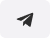
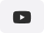
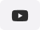
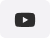

logo

О нас
"Свежий Ветер" - волонтерская общественная кампания, созданная белорусами в 2019
году
с целью защиты независимости Беларуси от углубленной интеграции с Россией. Благодаря
деятельности сначала
десятков, а впоследствии сотен ее активистов-волонтеров,
тема опасности сближения с
РФ и неконституционности его проведения стала резонансной
и вызвала большой отклик в белорусском публичном пространстве: в социальных сетях и негосударственных
СМИ.
деятельности сначала
десятков, а впоследствии сотен ее активистов-волонтеров,
тема опасности сближения с
РФ и неконституционности его проведения стала резонансной
и вызвала большой отклик в белорусском публичном пространстве: в социальных сетях и негосударственных
СМИ.

Жывы ланцуг ад “Свежага ветру” у Мінску. 7 снежня 2019.
"Сто дней до
аншлюса"
аншлюса"
Наша информационная
кампания "Сто дней до
аншлюса" сумела сломать
барьер замалчивания
переговоров по интеграции
даже в государственных и
правительственных
учреждениях. Благодаря ей
сотни тысяч белорусов узнали о
существовании тридцать одной
дорожной карты интеграции
экономических систем двух
стран, которые существенно
ограничивают также и
политический суверенитет
Беларуси. В конечном счете это
вызвало в Беларуси волну
публичных высказываний
нежелания интеграции с
Россией. В результате активных
действий всех сил,
выступавших за независимость
в прошлом году, количество
сторонников сотрудничества с
Россией в Беларуси
сократилось на треть.
кампания "Сто дней до
аншлюса" сумела сломать
барьер замалчивания
переговоров по интеграции
даже в государственных и
правительственных
учреждениях. Благодаря ей
сотни тысяч белорусов узнали о
существовании тридцать одной
дорожной карты интеграции
экономических систем двух
стран, которые существенно
ограничивают также и
политический суверенитет
Беларуси. В конечном счете это
вызвало в Беларуси волну
публичных высказываний
нежелания интеграции с
Россией. В результате активных
действий всех сил,
выступавших за независимость
в прошлом году, количество
сторонников сотрудничества с
Россией в Беларуси
сократилось на треть.

Прэс-канферэнцыя Свежага Ветру ў
Прэс-клубе
Прэс-клубе
Дорожные карты, которые белорусское правительство засекретило, не были
подписаны ни в декабре
прошлого, ни в январе
нынешнего года. Но опасность
рейдерского захвата Беларуси
путем дальнейшего
экономического и
политического давления
никуда не делась. Союзный
договор, подписанный в апреле
1999 года, до сих пор не
денонсирован. А с января 2020
Россия отменила выгодные
белорусскому руководству
схемы поставок нефти и газа и
запустила механизм доведения
Беларуси до дефолта.
подписаны ни в декабре
прошлого, ни в январе
нынешнего года. Но опасность
рейдерского захвата Беларуси
путем дальнейшего
экономического и
политического давления
никуда не делась. Союзный
договор, подписанный в апреле
1999 года, до сих пор не
денонсирован. А с января 2020
Россия отменила выгодные
белорусскому руководству
схемы поставок нефти и газа и
запустила механизм доведения
Беларуси до дефолта.
Цель
Цель этого процесса - прежняя: инкорпорация нашей страны в состав РФ. Поэтому
общественная кампания
"Свежий Ветер" продолжает
свою деятельность и призывает
присоединяться к ней.
общественная кампания
"Свежий Ветер" продолжает
свою деятельность и призывает
присоединяться к ней.



 

